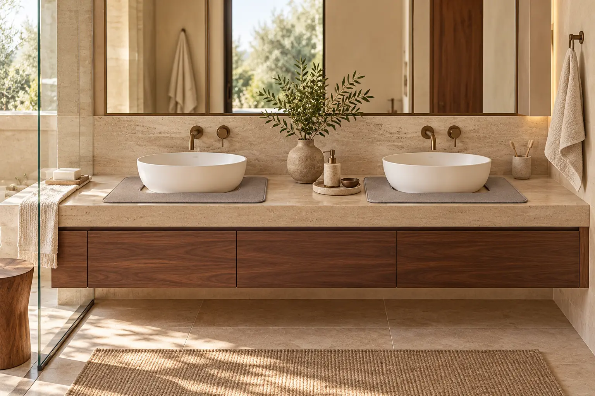
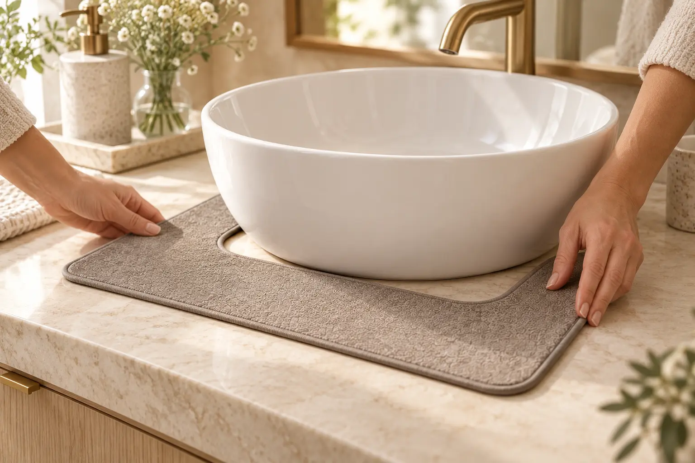
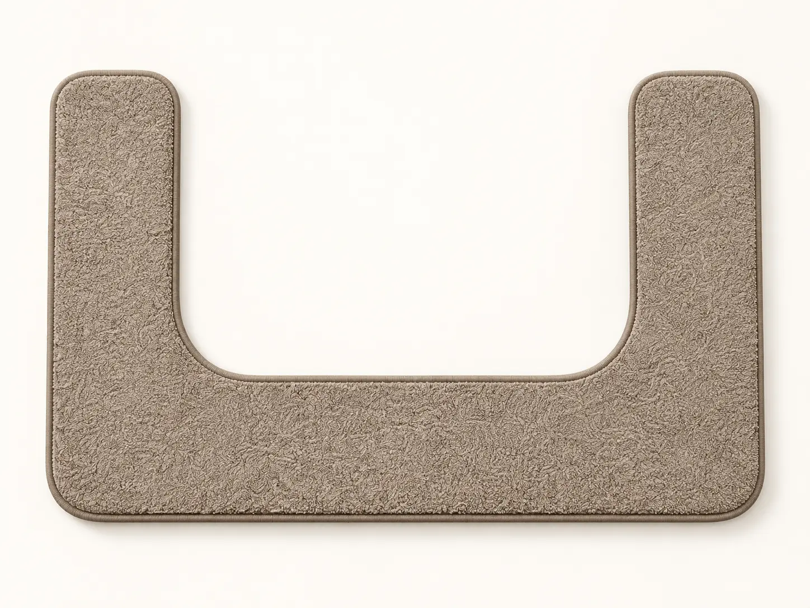

Consider the routine
Make the everyday easier, one small interaction at a time.

Where it started
A bathroom can be beautiful and still have water gathering around the sink. That familiar little inconvenience became the starting point for Dry Habit: a practical object designed with the room in mind.
The Dry Habit Hug™ gives everyday splashes a soft place to land. Its shape follows the basin; its quiet texture feels at home on the vanity.

We wanted something you could leave beside the sink because it belongs there. A soft silhouette, a slim profile, and a surface made for the little moments between one routine and the next.
Explore the matMake the everyday easier, one small interaction at a time.
Choose a reusable object that earns its place on the vanity.
Practical details can live comfortably alongside good design.
